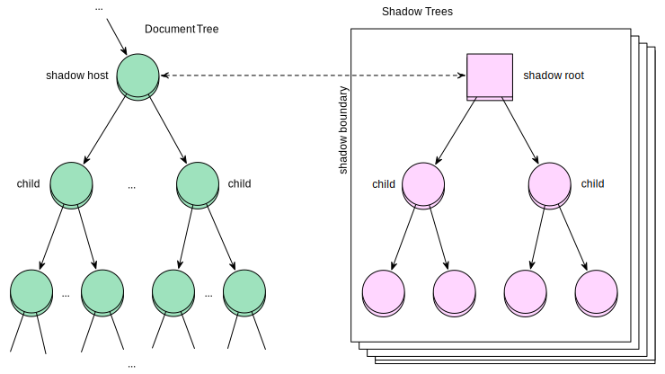

Level Next Web Apps
Delphi
Components

W3C
Web Components
<x-button>WASSUP</x-button>
Web Components
<template>— blueprint- Shadow DOM — encapsulation
- Custom elements (
x-) — toolbelt
Templates
- mustache
- handlebars
- underscore
HTML is not a String
<template id="awesome">
<img src="">
<div class="title"></div>
</template>
HTML Templates
var t = document
.querySelector('#awesome')
t.content
.querySelector('img')
.src = 'http://...'
document.body.appendChild(
t.content.cloneNode(true))
Shadow DOM
Shadow DOM
- Encapsulation (styles, scripts)
- Inserion points
- styling hooks (custom pseudo els)
@hostat-rule


Shadow DOM
<div id="host">
<h1>Normal DOM</h1>
</div>
var shadow = document
.querySelector('#host')
.createShadowRoot()
shadow.innerHTML = '<div>Shadow DOM</div>'
Normal DOM
Shadow Pseudo
<style>
#host::x-pseudo {
color: blue
}
</style>
<div id="host"></div>
<script>
document
.querySelector('#host')
.createShadowRoot()
.innerHTML =
'<div pseudo="x-pseudo">\
</div>'
</script>
CSS Variables
x-tag {
color: var(tag-color);
font: var(tag-font)}
#host {
var-tag-color: blue;
var-tag-font: sans-serif}
CSS Custom Properties
<div id="host">
<h1>Normal DOM</h1>
<div>other content</div>
</div>
<style>
h1, h2 {font-size: 25pt}
</style>
<content select="h1"></content>
<h2>sub header<h2>
<h2content select="*"></content>
<element name="x-tag">
<template>
<content></content>
</template>
</element>
<link rel="component"
href="x-tag.html">
<x-tag>
...
</x-tag>
<element name="x-tag"
constructor="Tag">
<template></template>
<script>Tag.prototype = {}
</script></element>
<link rel="component"
href="x-tag.html">
<script>
var t = new Tag()
t.addEventListener('click',
function(){ this.method() })
document.body
.appendChild(tabs)
</script>
- 25
Layout
CSS
<table>position: absolutefloat: leftclear: both

Flexbox
Features
- Similar to block model
- Flow direction can be up/down/left/right
- Display order can be reversed
- Elements can
flextheir size
Flexbox (new syntax)
display: -ms-flexbox
display: flex
display: inline-flex
flex-flow: <flex-direction>
|| <flex-wrap>
Flex element
flex: <flex-grow>
<flex-shrink>
|| <flex-basis>
order: 2
justify-content

align-items & align-self

align-content

- 22
- nightly
- 12.1
- 10
Grid
Grid Howto
display: grid;
grid-definition-columns:
200px 1fr 200px;
grid-definition-rows: auto;
grid-row: <position> <span>;
grid-column: 1 2;
CSS Grid Layout
Grid template
.grid {
display: grid;
grid-template:"head head"
"nav main"
"foot foot"
}
.grid > a {
grid-area: "nav";
}
- 10